Core Concepts
Networking Essentials
Learn the important parts of networking that you'll need to know for your system design interviews
Networking is a fundamental part of system design: you're nearly always going to be designing systems comprised of independent devices that communicate over a network. But the field of networking is vast and complex, and it's easy to get lost (this was one of the heaviest textbooks in school, gross).
In this guide we're going to cover the most important parts of networking that you'll need to know for your system design interviews. In later deep dives, patterns, and problem breakdowns, we'll build on these basics to solve for the problems you'll face as you design your systems.
To do this, we'll start with the fundamentals of how networks operate, then examine key protocols at different layers of the networking stack. For each concept, we'll cover its purpose, how it works, and when to apply it in your system designs. Lots to cover so let's get to it!
Networking tends to be a stronger focus in infrastructure and distributed systems interviews. For full-stack and product-focused roles, you'll likely only need a surface understanding of networking concepts. Understanding these fundamentals will help you make better decisions, even if the minute details aren't going to be tested in your interviews.
Each interviewer is a little different and if your interviewer just got off an oncall rotation dealing with load balancer problems or CDN issues, you'll want to be prepared to respond to their probes and questions!
Networking 101
At its core, networking is about connecting devices and enabling them to communicate. Networks are built on a layered architecture (the so-called "OSI model") which greatly simplifies the world for us application developers who sit on top of it.
Effectively, network layers are just abstractions that allow us to reason about the communication between devices in simpler terms relevant to our application. This way, when you're requesting a webpage, you don't need to know which voltages represent a 1 or a 0 on the network wire (modern networking hardware is even more sophisticated than this!) — you just need to know how to use the next layer down the stack. Think of it like how you might use open in your language of choice instead of manually instructing the disk how to read bytes off a disk.
Networking Layers
While the full networking stack is fascinating, there are three key layers that come up most often in system design interviews. We're going to dive into each of them in a bit, but first let's talk about what these layers do and how they work together.
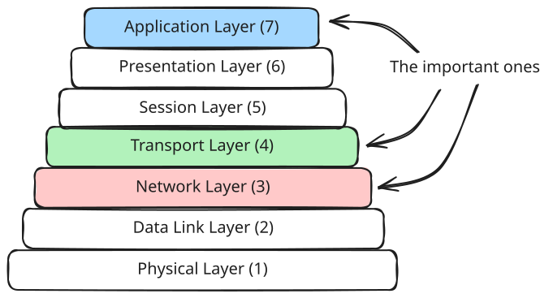
OSI Layers
Network Layer (Layer 3)
At this layer is IP, the protocol that handles routing and addressing. It's responsible for breaking the data into packets, handling packet forwarding between networks, and providing best-effort delivery to any destination IP address on the network. While there are other protocols at this layer (like InfiniBand, which is used extensively for massive ML training workloads), IP by far the most common for system design interviews.
Transport Layer (Layer 4)
At this layer, we have TCP, QUIC, and UDP, which provide end-to-end communication services. Think of them like a layer that provides features like reliability, ordering, and flow control on top of the network layer.
Application Layer (Layer 7)
At the final layer are the application protocols like DNS, HTTP, Websockets, WebRTC. These are common protocols that build on top of TCP (or UDP, in the case of WebRTC) to provide a layer of abstraction for different types of data typically associated with web applications. We'll cover them in depth.
These layers work together to enable all our network communications. To see how they interact in practice, let's walk through a concrete example of how a simple web request works.
Example: A Simple Web Request
When you type a URL into your browser, several layers of networking protocols spring into action. Let's break down how these layers work together to retrieve a simple web page over HTTP on TCP.
First, we use DNS to convert a human-readable domain name like hellointerview.com into an IP address like 32.42.52.62. Then, a series of carefully orchestrated steps begins. We set up a TCP connection over IP, send our HTTP request, get a response, and tear down the connection.
In detail:
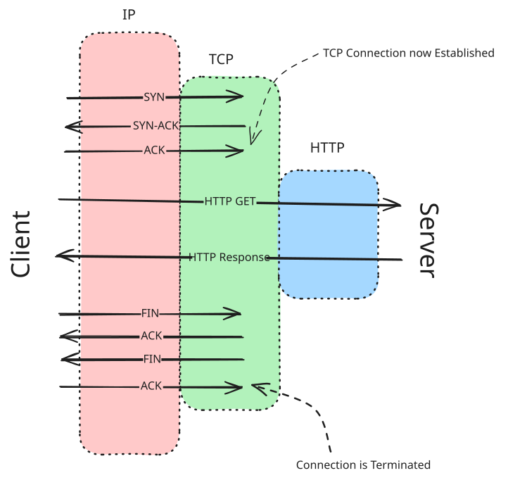
Simple HTTP Request
- DNS Resolution: The client starts by resolving the domain name of the website to an IP address using DNS (Domain Name System).
- TCP Handshake: The client initiates a TCP connection with the server using a three-way handshake:
- SYN: The client sends a SYN (synchronize) packet to the server to request a connection.
- SYN-ACK: The server responds with a SYN-ACK (synchronize-acknowledge) packet to acknowledge the request.
- ACK: The client sends an ACK (acknowledge) packet to establish the connection.
- HTTP Request: Once the TCP connection is established, the client sends an HTTP GET request to the server to request the web page.
- Server Processing: The server processes the request, retrieves the requested web page, and prepares an HTTP response. (This is usually the only latency most SWE's think about and control!)
- HTTP Response: The server sends the HTTP response back to the client, which includes the requested web page content.
- TCP Teardown: After the data transfer is complete, the client and server close the TCP connection using a four-way handshake:
- FIN: The client sends a FIN (finish) packet to the server to terminate the connection.
- ACK: The server acknowledges the FIN packet with an ACK.
- FIN: The server sends a FIN packet to the client to terminate its side of the connection.
- ACK: The client acknowledges the server's FIN packet with an ACK.
It's less common recently in BigTech, but it used to be a popular interview question to ask candidates to dive into the details of "what happens when you type (e.g.) hellointerview.com into your browser and press enter?".
Details like these aren't typically a part of a system design interview but it's helpful to understand the basics of networking. It may save you some headaches on the job!
While the specific details of TCP handshakes and teardowns might seem too esoteric to apply to interviews, there's a few things to observe which we'll build upon:
First, as an application developer we are able to simplify our mental models dramatically. The application can take for granted that the data is transmitted with a degree of reliability and ordering: the TCP layer ensures that the data is delivered correctly and in order, and will provide a response to the application if it doesn't arrive. We also never have to concern ourselves with finding a specific server in the world and driving a pulse train of electrons to get there. With DNS, we can look up the IP address, and with IP the various networking hardware between us, our ISP, backbone providers, etc. can route the data to the destination. Nice!
Second, while we have one conceptual "request" and "response" here, there were many more packets and requests exchanged between servers to make it happen. All of these introduce latency that we can ignore ... until we can't. The higher in the stack we go, the more latency and processing required. This is relevant for our load balancer discussion shortly!
Finally note that the connection between the client and server is a state that both the client and server must maintain. Unless we use features like HTTP keep-alive or HTTP/2 multiplexing, we need to repeat this connection setup process for every request - a potentially significant overhead. This will become important for designing systems which need persistent connections, like those handling Realtime Updates.
Network Layer Protocols
The first layer in our journey are the network layer protocols. This layer is dominated by the IP protocol, which is responsible for routing and addressing. In a system, nodes are assigned IPs usually by a DHCP server when they boot up. These IP addresses are arbitrary and only mean something in as much as we tell people about them. If I want to, I can create a private network with my servers and give them any IP address I want, but if you want internet traffic to be able to find them you'll need to use IP addresses that are routable and allocated by a RIR.
These assigned IP addresses are called public IPs and are used to identify devices on the internet. The most important thing about them is that internet routing infrastructure is optimized to route traffic between public IPs and knows where they are. Any address starting with 17 (e.g. 17.0.0.0) is part of Apple — the backbone of the internet knows that when you want to send a packet to these addresses, you need to send it to their routers.
There's a lot more to cover in internet routing but it's not going to be important for our purposes so we'll keep it simple and move up the stack to our next layer: the transport layer.
Transport Layer Protocols
The transport layer is where we establish end-to-end communication between applications. They give us some guarantees instead of handing us a jumbled mess of packets. The three primary protocols at this layer are TCP, UDP, and QUIC, each with distinct characteristics that make them suitable for different use cases.
For most system design interviews, the real choice you'll be faced with is between TCP and UDP. QUIC is a new protocol that aims to provide some of the same benefits of TCP with some modernization and performance benefits. While QUIC is becoming more popular, it's still a relatively new protocol and not yet ubiquitous - for our purposes we'll consider it a better version of TCP but without the same broad baseline of adoption.
Some performance-oriented interviewers will be impressed by your knowledge of modern protocols like QUIC and HTTP/3, but most system design interviewers will want you to spend your time elsewhere in the design!
UDP: Fast but Unreliable
User Datagram Protocol (UDP) is the machinegun of protocols. It offers few features on top of IP but is very fast. Spray and pray is the right way to think about this. It provides a simpler, connectionless service with no guarantees of delivery, ordering, or duplicate protection.
If you write an application that receives UDP datagrams, you'll be able to see where they came from (i.e. the source IP address and port) and where they're going (i.e. the destination IP address and port). But that's it! The rest is a binary blob.
Key characteristics of UDP include:
- Connectionless: No handshake or connection setup
- No guarantee of delivery: Packets may be lost without notification
- No ordering: Packets may arrive in a different order than sent
- Lower latency: Less overhead means faster transmission
No setup sounds great but 2 and 3 kinda suck, so why would you want to use UDP?
UDP is perfect for applications where speed is more important than reliability, such as live video streaming, online gaming, VoIP, and DNS lookups. In these cases the application or client is equipped to handle the occasional packet loss or out of order packet. For VOIP as an example, the client might just drop the occasional packet leading to a hiccup in the audio but overall the conversation is still intelligible. This is vastly preferable to retransmitting those lost packets and clogging up the network with ACKs.
Browsers don't have widespread support for UDP yet outside of WebRTC (we'll get into it). If you're thinking about a design which could use UDP (like the spamming of hearts and reactions in Facebook Live Comments), think about what you'll do for your browser-based users. It might be that your app-based users get a real-time UDP stream of reactions while browser-based users a slower, batched HTTP stream which you spread out over time in the UI.
TCP: Reliable but with Overhead
Transmission Control Protocol (TCP) is the workhorse of the internet. It provides reliable, ordered, and error-checked delivery of data. It establishes a connection through a three-way handshake (we saw this illustrated above with the HTTP example) and maintains that connection throughout the communication session.
This connection is called a "stream" and is a stateful connection between the client and server — it also gives us a basis to talk about ordering: two messages sent in the same stream/connection will arrive in the same order. TCP will ensure that recipients of messages acknowledge their receipt and, if they don't, will retransmit the message until it is acknowledged.
Key Characteristics of TCP
- Connection-oriented: Establishes a dedicated connection before data transfer
- Reliable delivery: Guarantees that data arrives in order and without errors
- Flow control: Prevents overwhelming receivers with too much data
- Congestion control: Adapts to network congestion to prevent collapse
TCP is ideal for applications where data integrity is critical — that is, basically everything where UDP is not a good fit.
When to Choose Each Protocol
In system design interviews, most interviewers will expect you're using TCP by default — it often doesn't need to be directly mentioned. That's good because that's also our recommendation!
But you'll be able to earn extra points if you can make the case for a UDP application and not bungle the details. So the question you should be asking yourself is whether UDP is a better fit for your use-case.
You might choose UDP when:
- Low latency is critical (real-time applications, gaming)
- Some data loss is acceptable (media streaming)
- You're handling high-volume telemetry or logs where occasional loss is acceptable
- You don't need to support web browsers (or you have an alternative for that client)
Modern applications often use both protocols. For example, a web-based video conferencing app might use TCP/HTTP for signaling and authentication but UDP/WebRTC for the actual audio/video streams.
TCP vs UDP Comparison
| Feature | UDP | TCP |
|---|---|---|
| Connection | Connectionless | Connection-oriented |
| Reliability | Best-effort delivery | Guaranteed delivery |
| Ordering | No ordering guarantees | Maintains order |
| Flow Control | No | Yes |
| Congestion Control | No | Yes |
| Header Size | 8 bytes | 20-60 bytes |
| Speed | Faster | Slower due to overhead |
| Use Cases | Streaming, gaming, VoIP | Everything Else |
Application Layer Protocols
The application layer is where most developers spend their time. These protocols define how applications communicate and are built on top of the transport layer protocols we just discussed.
Typically the application layer is processed in "User Space" whereas layers beneath it are processed in the OS kernel in "Kernel Space". This means that the application layer is more flexible and can be more easily modified than lower layers, whereas lower layers are difficult to change but can be very efficient.
HTTP/HTTPS: The Web's Foundation
Hypertext Transfer Protocol (HTTP) is the de-facto standard for data communication on the web. It's a request-response protocol where clients send requests to servers, and servers respond with the requested data.
HTTP is a stateless protocol, meaning that each request is independent and the server doesn't need to maintain any information about previous requests. This is generally a good thing. In system design you'll want to minimize the surface area of your system that needs to be stateful where possible. Most simple HTTP servers can be described as a function of the request parameters — they're stateless!
Here's a simple HTTP request/response. You can actually open up a TCP connection and send an HTTP request/response by hand with netcat (nc on the command line) if you'd like!
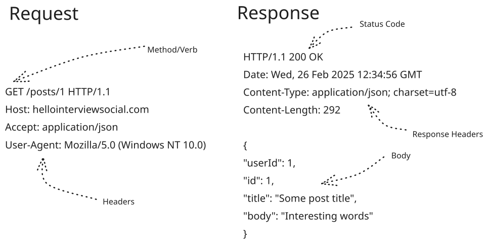
Simple HTTP Request/Response
You'll see a few key concepts:
- Request methods: GET, POST, PUT, DELETE, etc.
- Status codes: 200 OK, 404 Not Found, 500 Server Error, etc.
- Headers: Metadata about the request or response
- Body: The actual content being transferred
The HTTP request methods and status codes are well-defined and standardized (think of them like enums). It's good to know some of the common ones, but most interviewers aren't going to get into this level of detail except if you're using a RESTful API.
Common Request Methods
- GET: Request data from the server. GET requests should be idempotent and don't have a body.
- POST: Send data to the server.
- PUT: Update data on the server.
- PATCH: Update a resource partially.
- DELETE: Delete data from the server. DELETE requests should be idempotent.
Common Status Codes
- Success (2xx)
- 200 OK: The request was successful
- 201 Created: The request was successful and a new resource was created
- Moved (3xx)
- 302 Found: The requested resource has been moved temporarily
- 301 Moved Permanently: The requested resource has been moved permanently
- Client Error (4xx)
- 404 Not Found: The requested resource was not found
- 401 Unauthorized: The request requires authentication
- 403 Forbidden: The server understood the request but refuses to authorize it
- 429 Too Many Requests: The client has sent too many requests in a given amount of time
- Server Error (5xx)
- 500 Server Error: The server encountered an error
- 502 Bad Gateway: The server received an invalid response from the upstream server
The headers are much more flexible (think of them like key/value pairs). This flexibility demonstrates the pragmatic design philosophy that underlies much of the HTTP spec.
HTTP headers are a great example of how to design an interface that is flexible to unknown future use-cases and provides a good lesson for API design. Content negotiation is a perfect case study.
The HTTP Accepts-Encoding header as an example provides clients a way to indicate they can handle different types of content encoding. This allows servers to provide (e.g.) gzip or br (brotli) encoded responses if they're available. Servers can then respond with the most efficient encoding for that client with Content-Encoding: X providing both backward compatibility and graceful degradation.
HTTPS adds a security layer (TLS/SSL) to encrypt communications, protecting against eavesdropping and man-in-the-middle attacks. If you're building a public website you're going to be using HTTPS without exception. Generally speaking this means that the contents of your HTTP requests and responses are encrypted and safe in transit.
While the contents of your HTTPS requests and responses are encrypted, they aren't guaranteed to be generated by your client! Your API should never trust the contents of the request body without validating it. A common mistake is to include the user's ID in the request body and use it to make a database call. If an attacker can change the request body, they can change the user ID and read arbitrary user data. Ouch!
This doesn't mean you can't include user IDs in your requests. It just means you need to be able to validate them on the server and your API shouldn't ask for anything you can't trust.
That's HTTP in a nutshell! Now let's talk about how to use it to build APIs.
REST: Simple and Flexible
While HTTP can be used directly to build websites, oftentimes system designs are concerned with the communication between services via APIs. For creating these APIs, we have three main paradigms: REST, GraphQL, and gRPC.
REST is the most common API paradigm you'll use in system design interviews. It's a simple and flexible way to create APIs that are easy to understand and use. The core principle behind REST is that clients are often performing simple operations against resources (think of them like database tables or files on a server).
In RESTful API design, the primary challenge is to model your resources and the operations you can perform on them. RESTful API's take advantage of the HTTP methods or verbs together with some opinionated conventions about the paths and the body of the request. They often use JSON to represent the resources in both the request and response bodies — although it's not strictly required.
If you've followed our Delivery Framework, your Core Entities will oftentimes map directly to the resources in your API. Bonus!
A simple RESTful API might look like this (where User is a JSON object representing a user):
GET /users/{id} -> UserHere we're using the HTTP method "GET" to indicate that we're requesting a resource. The {id} is a placeholder for the resource ID, in this case the user ID of the user we want to retrieve.
When we want to update that user, we can use the HTTP method "PUT" to indicate that we're updating a pre-existing resource.
PUT /users/{id} -> User
{
"username": "john.doe",
"email": "john.doe@example.com"
}We can also create new resources by using the HTTP method "POST". We'll include the body the content of the resource we want to create. Note that I'm not specifying an ID here because the server will assign one.
POST /users -> User
{
"username": "stefan.mai",
"email": "stefan@hellointerview.com"
}Finally, resources can be nested to represent relationships between resources. For example, a user might have many posts, so we can represent that relationship by nesting the posts under the user resource.
GET /users/{id}/posts -> [Post]Many engineers often think in terms of methods like updateUser or startGame. These are operations, not resources, so they're not RESTful.
In REST, we want to think in terms of resources and the operations you can perform on them. So our updateUser might be PUT /users/{id} and our startGame might be PATCH /games with { "status": "started" }.
Where to Use It
Overall REST is very flexible for a wide variety of use-cases and applications. ElasticSearch uses it to manage documents, configure indexes, and more. Check out that deep dive if you want to see a great example of a RESTful API.
REST is not going to be the most performant solution for very high throughput services, and generally speaking JSON is a pretty inefficient format for serializing and deserializing data.
That said, most applications aren't going to be bottlenecked by request serialization. Like TCP, REST is where we'd suggest you default for your interviews. It's well-understood and a good baseline for building scalable systems. You should reach for GraphQL, gRPC, SSE, or WebSockets if you have specific needs that REST can't meet. For practical REST API design patterns, see our API Design guide.
GraphQL: Flexible Data Fetching
GraphQL is a more recent API paradigm (open-sourced circa 2015 by Facebook) that allows clients to request exactly the data they need.
Here's the problem GraphQL solves: Frequently teams and systems are organized into frontend and backend. As an example, the frontend might be a mobile app and the backend a database-based API.
When the frontend team wants to display a new page, they can either (a) cobble together a bunch of different requests to backend endpoints (imagine querying 1 API for a list of users and making 10 API calls to get their details), (b) create huge aggregation APIs which are hard to maintain and slow to change, or (c) write brand new APIs for every new page they want to display. None of these are particularly good solutions but it's easy to run into them with a standard REST API.
The problem with under-fetching is that you may need multiple requests and round trips. This adds overhead and latency to the page load.
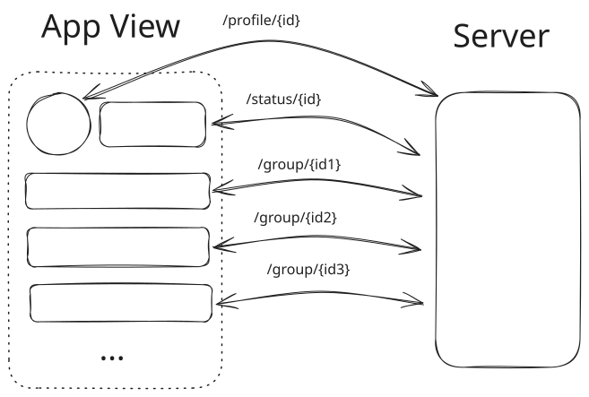
Under-Fetching Example - Page requires a lot of API calls to render
Over-fetching is the opposite: when we pack way more than we need in an API response to guard ourselves against future use-cases that we don't have today. It means that APIs take a long time to load and return too much data.
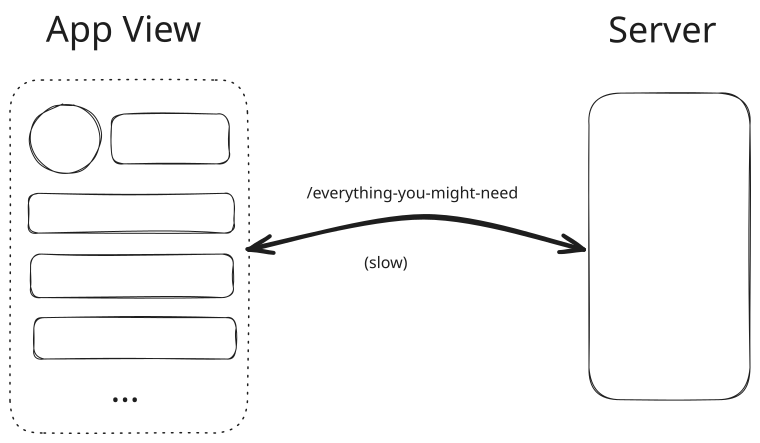
Over-Fetching Example - Results take too long and have far more data than the frontend needs
And writing brand new APIs for every new page is a nightmare.
GraphQL solves these problems by allowing the frontend team to flexibly query the backend for exactly the data they need. The backend can then respond with the data in the shape that the frontend needs it. This is a great fit for mobile apps and other use-cases where you want to reduce the amount of data transferred.
Here's an example of a GraphQL query which fetches just the data the frontend needs for a sophisticated page which shows both users with their profiles and groups they're a member of.
query GetUsersWithProfilesAndGroups($limit: Int = 10, $offset: Int = 0) {
users(limit: $limit, offset: $offset) {
id
username
//...
profile {
id
fullName
avatar
// ...
}
groups {
id
name
description
// ...
category {
id
name
icon
}
}
status {
isActive
lastActiveAt
}
}
_metadata {
totalCount
hasNextPage
}
}The graphQL code here is basically specifying which fields and nested objects we want to fetch. The backend can interpret this query and respond with just the data the frontend needs.
In our example, instead of writing a bunch of different APIs, the frontend team can just write a single query to get the data they need and the backend can (in theory) respond with the data in the shape that the frontend needs it.
Where to Use It
GraphQL is a great fit for use-cases where the frontend team needs to iterate quickly and adjust. They can flexibly query the backend for exactly the data they need. On the other hand, execution of these GraphQL queries can be a source of latency and complexity for the backend — sometimes involving the same bespoke backend code that we're trying to avoid. In practice, GraphQL finds its sweet spot with complex clients and when multiple teams are making wide queries to overlapping data.
For system design interviews specifically, the benefits of GraphQL are murky. In the interview you'll have a fixed set of requirements (not the moving targets of iterating on a mobile app or web frontend where GraphQL starts to shine). Additionally, the interviewer will frequently want to see how you optimize specific query patterns and while you can talk about custom resolvers — GraphQL is frequently just in the way.
We recommend bringing up GraphQL in cases where the problem is clearly focused on flexibility (e.g. the interviewer tells us we need to be able to adapt our apps quickly to changing requirements) or when the requirements in the interview are deliberately uncertain. For more interview-focused GraphQL guidance, see our API Design article.
gRPC: Efficient Service Communication
gRPC is a high-performance RPC (Remote Procedure Call) framework from Google (the "g") that uses HTTP/2 and Protocol Buffers.
Think of Protocol Buffers like JSON but with a more rigid schema that allows for better performance and more efficient serialization. Here's an example of a Protocol Buffer definition for a User resource:
message User {
string id = 1;
string name = 2;
}Instead of a chunky JSON object with embedded schema (40 bytes) ...
{
"id": "123",
"name": "John Doe"
}... we have a binary encoding (15 bytes) of the same data with very skinny tags and variable length encoding of the strings. Less space and less CPU to parse!
0A 03 31 32 33 12 08 6A 6F 68 6E 20 64 6F 65gRPC builds on this to provide service definitions. Here's an example of a gRPC service definition for a UserService:
message GetUserRequest {
string id = 1;
}
message GetUserResponse {
User user = 1;
}
service UserService {
rpc GetUser (GetUserRequest) returns (GetUserResponse);
}I probably don't need to explain the details of this to you!
These definitions are compiled into a client and server stub which a wide variety of languages and frameworks can consume to build services and clients. gRPC includes a bunch of features relevant for operating microservice architectures at scale (it was invented by Google after all) like streaming, deadlines, client-side load balancing and more. But the most important thing to know is that it's a binary protocol that's faster and more efficient than JSON over HTTP.
Where to Use It
gRPC shines in microservices architectures where services need to communicate efficiently. Its strong typing helps catch errors at compile time rather than runtime, and its binary protocol is more efficient than JSON over HTTP (some benchmarks show a factor of 10x throughput!). Consider gRPC for internal service-to-service communication, especially when performance is critical or when latencies are dominated by the network rather than the work the server is doing.
That said, you generally won't use gRPC for public-facing APIs, especially for clients you don't control, because it's a binary protocol and the tooling for working with it is less mature than simple JSON over HTTP. Having internal APIs using gRPC and external APIs using REST is a great way to get the benefits of a binary protocol without the complexity of a public-facing API. There are definitely engineers who would love it if gRPC was more widely adopted, but it's not there yet.
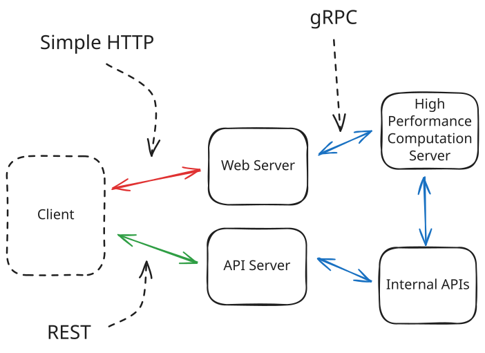
Example of Using gRPC for Internal APIs, and REST and HTTP for External
As such, we recommend using REST for public-facing APIs and leaving gRPC for internal service-to-service communication — especially if binary data is being exchanged or performance is critical. In many interviews, using REST both for internal and external APIs is fine and you can build from there depending on the needs of the problem and probes from your interviewer.
Sometimes engineers think the point of a system design interview is to draw up an optimal solution to a problem on a whiteboard. But interviewers typically are trying to understand how you think through a problem and how you react to challenges and constraints you may not have seen before. Be wary of hyperoptimizing your RPC protocol choice before you've handled other substantial bottlenecks in the problem. Premature optimization is the root of all evil!
Server-Sent Events (SSE): Real-Time Push Communication
So far we've been talking mostly about request/response style APIs, but many applications need to "push" data to clients in a more streaming fashion. While gRPC does support streaming, it's not ideal for external APIs due to limited support (e.g. no browsers support gRPC today). Server-Sent Events (SSE) is a spec defined on top of HTTP that allows a server to push many messages to the client over a single HTTP connection.
Here's how to think of it: SSE is a nice hack on top of HTTP that allows a server to stream many messages, over time, in a single response from the server.
With most HTTP APIs you'd get a single, cohesive JSON blob as a response from the server that is processed once the whole thing has been received.
{
"events": [
{ "id": 1, "timestamp": "2025-01-01T00:00:00Z", "description": "Event 1" },
{ "id": 2, "timestamp": "2025-01-01T00:00:01Z", "description": "Event 2" },
...
{ "id": 100, "timestamp": "2025-01-01T00:00:10Z", "description": "Event 100" }
]
}Since we have to wait for the whole response to come in before we can process it, it's not much good for push notifications!
On the other hand, with SSE, the server can push many messages as "chunks" in a single response from the server:
data: {"id": 1, "timestamp": "2025-01-01T00:00:00Z", "description": "Event 1"}
data: {"id": 2, "timestamp": "2025-01-01T00:00:01Z", "description": "Event 2"}
...
data: {"id": 100, "timestamp": "2025-01-01T00:00:10Z", "description": "Event 100"}Each line here is received as a separate message from the server. The client can then process each message as it comes in. It's still one big HTTP response (same TCP connection), but it comes in over many smaller packets and clients are expected to process each line of the body individually to allow them to react to the data as it comes in.
Now with all good hacks, SSE comes with some acute limitations. We can't keep an SSE connection open for too long because the server (or the load balancer, or a middle box proxy) will close down the connection. So the SSE standard defines the behavior of an EventSource object that, once the connection is closed, will automatically reconnect with the ID of the last message received. Servers are expected to keep track of prior messages that may have been missed while the client was disconnected and resend them.
In practice there are also some nasty, misbehaving networks that will batch up all SSE responses into a single response making it behave a lot like what we're trying to avoid. Tradeoffs!
Most interviewers are not familiar with these limitations and will gladly let you assume they don't exist. But it's good to be aware of them because anyone who has actually implemented SSE has an enduring headache from these issues and will try to get a sense for whether you've actually used it in practice.
Where to Use It
You'll find SSE useful in system design interviews in situations where you want clients to get notifications or events as soon as they happen. SSE is a great option for keeping bidders up-to-date on the current price of an auction, for example.
We touch on this pattern in greater detail in our Realtime Updates deep dive, which also covers the server-side implications of an SSE implementation.
WebSockets: Real-Time Bidirectional Communication
Now while SSE is a great way to push from the server to client, many applications need real-time bidirectional communication. And while gRPC does support streaming, it's still (broken record?) not ideal for external APIs due to limited support (e.g. no browsers support gRPC today). So what's an interview candidate to do?
Enter WebSockets! WebSockets provide a persistent, TCP-style connection between client and server, allowing for real-time, bidirectional communication with broad support (including browsers). Unlike HTTP's request-response model, WebSockets enable servers to push data to clients without being prompted by a new request. Similarly clients can push data back to the server without the same wait.
WebSockets are initiated via an HTTP "upgrade" protocol, which allows an existing TCP connection to change L7 protocols. This is super convenient because it means you can utilize some of the existing HTTP session information (e.g. cookies, headers, etc.) to your advantage.
Just because clients can upgrade from HTTP to WebSocket doesn't mean that the infrastructure will support it. Every piece of infrastructure between the client and server will need to support WebSocket connections.
If you've ever implemented Websockets you've probably hit a bunch of issues with firewalls, proxies, load balancers, and other infrastructure that don't support WebSocket connections.
How it Works
Here's how it works:
- Client initiates WebSocket handshake over HTTP (with a backing TCP connection)
- Connection upgrades to WebSocket protocol, WebSocket takes over the TCP connection
- Both client and server can send binary messages to each other over the connection
- The connection stays open until explicitly closed
WebSockets don't dictate an application protocol, you effectively have a channel where you can send binary packets to the server from the client and vice versa. This means you'll need some way of defining what it is your client and server are exchanging. For many WebSocket applications, simple serialized JSON messages are a great option! This also gives you a chance to define the API of your service for your design:
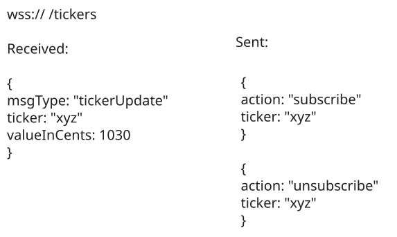
WebSocket API Example
Where to Use It
WebSockets come up in system design interviews when you need high-frequency, persistent, bi-directional communication between client and server. Think real-time applications, games, and other use-cases where you need to send and receive messages as soon as they happen.
For applications where either you just need to be able to send requests and receive responses, or situations where you can make due with the push notifications provided by SSE, WebSockets are overkill.
In system design interviews, launching into a WebSocket implementation without justifying why they are needed is a great way to get a "thumbs down" from your interviewer. WebSockets are powerful, but the infra required to support them can be expensive and the overhead of stateful connections (especially at scale) will require significant accommodations in your design. Hold off unless you really need them!
WebRTC: Peer-to-Peer Communication
The last protocol we'll cover is the most unique. WebRTC enables direct peer-to-peer communication between browsers without requiring an intermediary server for the data exchange. WebRTC can be perfect for collaborative applications like document editors and is especially useful for video/audio calling and conferencing applications. Oh, and it's the only application-level protocol we'll cover that uses UDP!
The WebRTC spec is comprised of several pieces of infra and protocols that are necessary to establish a peer-to-peer connection between browsers. From a networking perspective, peer-to-peer connections are more complex than the client-server models we've been discussing so far because most clients don't allow inbound connections for security reasons.
With WebRTC, clients talk to a central "signaling server" which keeps track of which peers are available together with their connection information. Once a client has the connection information for another peer, they can try to establish a direct connection without going through any intermediary servers.
In practice, most clients don't allow inbound connections for security reasons and the majority of users are behind a NAT (network address translation) device which keeps them from being connected to directly. So if we stopped there, most peers wouldn't be able to "speak" to each other.
The WebRTC standard includes two methods to work around these restrictions:
- STUN: "Session Traversal Utilities for NAT" is a protocol and a set of techniques like "hole punching" which allows peers to establish publically routable addresses and ports. I won't go into details here, but as hacky as it sounds it's a standard way to deal with NAT traversal and it involves repeatedly creating open ports and sharing them via the signaling server with peers.
- TURN: "Traversal Using Relays around NAT" is effectively a relay service, a way to bounce requests through a central server which can then be routed to the appropriate peer.
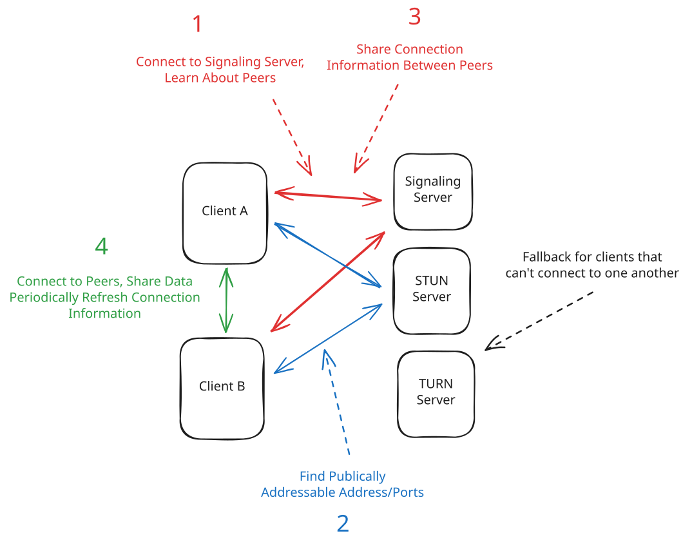
WebRTC Setup
There's effectively 4 steps to a WebRTC connection:
- Clients connect to a central signaling server to learn about their peers.
- Clients reach out to a STUN server to get their public IP address and port.
- Clients share this information with each other via the signaling server.
- Clients establish a direct peer-to-peer connection and start sending data.
This is the happy case! In reality, sometimes these connections fail and you need to have fallbacks like our TURN server.
Where to Use It
WebRTC is ideal for audio/video calling and conferencing applications. It can also occasionally be appropriate for collaborative applications like document editors, especially if they need to scale to many clients.
In practice, most collaborative editors don't require scaling to thousands of clients. Additionally, you often need a central server anyways to store the document and coordinate between clients. That's why we're using Websockets in our Google Docs problem breakdown. But there is an alternative to use WebRTC and CRDTs (Conflict-free Replicated Data Types) to achieve a truly peer-to-peer experience.
For interviews, we suggest sticking to WebRTC for video/audio calling and conferencing applications.
WebRTC is an absolute pain to get right and even the best implementations still suffer connection losses. It truly is a niche solution.
In interviews, I've seen more candidates go wildly off trail trying to design peer-to-peer systems using WebRTC than I have seen them successfully implement them. Most problems don't require peer-to-peer connections and it's easy to try to wrap a solution around a problem that doesn't actually need it.
If you stick to only using WebRTC for video/audio calling and conferencing, you'll be in good shape.
There's way more to cover around WebRTC than is appropriate for this guide or your interview so we'll stop here, but I hope this gives you a good starting point for thinking about this protocol!
Load Balancing
And with that we've covered the top of our stack and all the relevant protocols you'll see in System Design interviews. But how do we scale our designs? Of course there are networking implications here!
For scaling, we have two options: bigger servers (vertical scaling) or more servers (horizontal scaling).
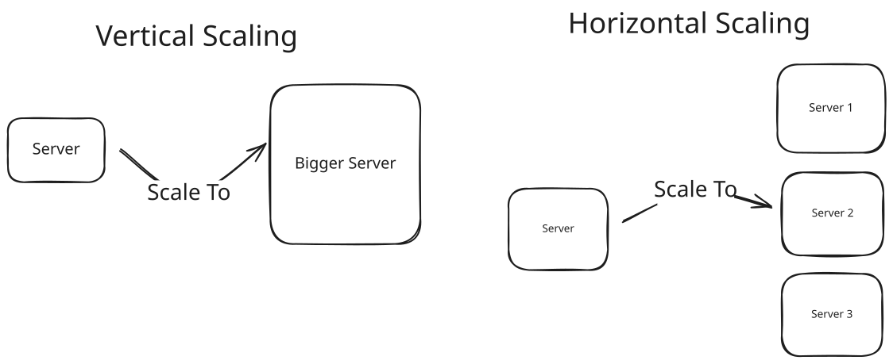
Vertical vs Horizontal Scaling
My personal preference is to employ vertical scaling wherever possible. Modern hardware is incredibly powerful and the days of requiring thousands of tiny servers when a few larger ones can handle the load are over (read more about modern hardware capabilities in our Numbers to Know deep dive).
That said, the reality for interviews is that the most common pattern for scaling you'll see is horizontal scaling: we're going to add more servers to handle the load. But just adding boxes to our whiteboard won't help if we don't tell our clients which server to talk to.
Enter: Load Balancing.
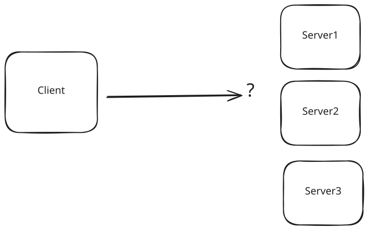
How do we route our traffic?
Types of Load Balancing
We need to spread the incoming requests (load) by deciding which server should handle each request. There's two ways to handle load balancing: on the client side or on the server side. Both have their pros and cons.
Client-Side Load Balancing
With client-side load balancing, the client itself decides which server to talk to. Usually this involves the client making a request to a service registry or directory which contains the list of available servers. Then the client makes a request to one of those servers directly. The client will need to periodically poll or be pushed updates when things change.
Client-side load balancing can be very fast and efficient. Since the client is making the decision, it can choose the fastest server without any additional latency. Instead of using a full network hop to get routed to the right server on every request, we only need to (periodically) sync our list of servers with the server registry.
Example: Redis Cluster
A great example of this is Redis Cluster (read more in our Redis deep dive). Redis cluster nodes maintain a gossip protocol between each other to share information about the cluster: which nodes are present, their status, etc. Every node knows about every other node!
In order to connect to a Redis Cluster, the client will make a request to any of the nodes in the cluster and ask about both the nodes participating in the cluster and the shards of data they contain. When it comes time to read or write data, the client hashes the key to determine which shard to send the request to, then uses the locally retrieved node information to decide which node to talk to. If you send a request to the wrong node, Redis will helpfully send you a MOVED response to let you know you got the wrong node.
Example: DNS
Another example of "client-side" load balancing is DNS. When you make a request to a domain name like example.com, your DNS resolver will return a rotated list of IP addresses for the domain. Each new request will get a different ordering of IP addresses (or even a different set entirely).
Because each client gets a different ordering of IP addresses, they're also going to hit different servers. The DNS resolver is effectively doing client-side load balancing for us!
This behavior of DNS is also how you avoid a single point of failure with a load balancer! You set up two load balancers (in different data centers or regions, to be safe) and use DNS to rotate between them. If one goes down, clients will automatically start trying the other one.
Where to Use It
Client-side load balancing can work great in two different scenarios: either (1) we have a small number of clients that we control, (e.g. the Redis Cluster client, or gRPC's client-side load balancing for internal services) or (2) we have a large number of clients but we can tolerate slow updates (e.g. DNS).
If we have a small number of clients that we control, getting them updates when we add or remove servers is easy! There's a lot of mechanisms to do this.
In the case of a large number of clients, the reason we care about the latency of updates is because the amount of time it takes will scale with the number of clients we have to notify. In DNS' case, entries have a TTL (time to live) which is the amount of time the entry is valid for. This allows far-flung DNS servers to cache entries for their own clients, but means that our updates cannot be faster than the TTL.
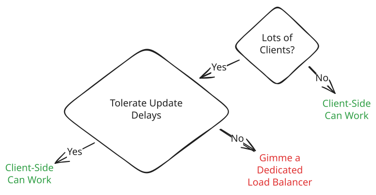
When to Use Client-Side Load Balancing
In an interview setting, client-side load balancing works remarkably well for internal microservices (it's actually built in to gRPC). Many interviewers actually aren't asking the details behind the lines between different services on your high-level design, but if you're asked more details about it you should definitely mention client-side load balancing!
For all other use-cases, we'll need a dedicated load balancer.
Dedicated Load Balancers
We may not want our clients to have to refresh their list of servers or even know about the existence of multiple servers on the backend. Or we might have a large number of clients that we don't control but need to retrieve updates quickly.
In these cases, we'll use a dedicated load balancer: a server or hardware device that sits between the client and the backend servers and makes decisions about which server to send the request to.
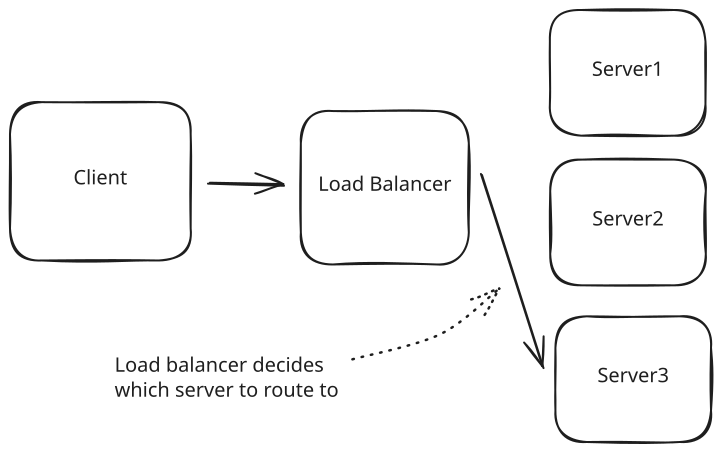
Dedicated Load Balancer
These load balancers can operate at different layers of the protocol stack and which you choose will depend, in part, on what your application needs.
Having a dedicated load balancer implies an additional hop in each request: first to the load balancer, then to the server which needs to serve the request. But in exchange we get very fast updates to our list of servers and fine-grained control over how we route requests.
Layer 4 Load Balancers
Layer 4 load balancers operate at the transport layer (TCP/UDP). They make routing decisions based on network information like IP addresses and ports, without looking at the actual content of the packets. The effect of a L4 load balancer is as-if you randomly selected a backend server and assumed that TCP connections were established directly between the client and that server.
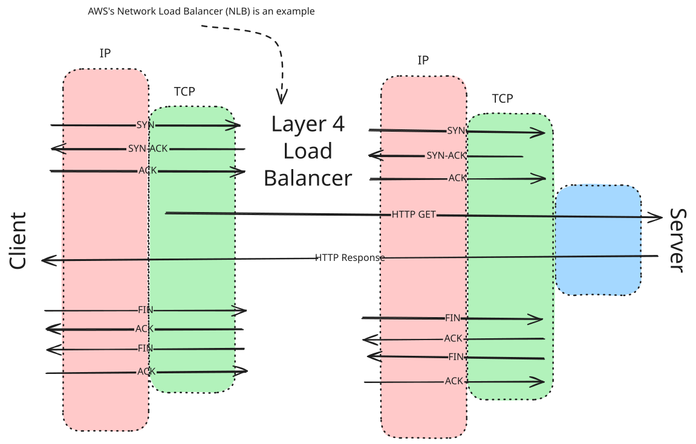
Simple HTTP Request with L4 Load Balancer
Layer 4 load balancers have some key characteristics, they ...
- Maintain persistent TCP connections between client and server.
- Are fast and efficient due to minimal packet inspection.
- Cannot make routing decisions based on application data.
- Are typically used when raw performance is the priority.
For example, if a client establishes a TCP connection through an L4 load balancer, that same server will handle all subsequent requests within that TCP session. This makes L4 load balancers particularly well-suited for protocols that require persistent connections, like WebSocket connections. At a conceptual level, it's as if we have a direct TCP connection between client and server which we can use to communicate at higher layers.
Where to Use It
L4 load balancers are great for WebSocket connections and other protocols that require persistent connections. They're also great for high-performance applications that don't require much application-level processing.
If you're using websockets in your interview, you probably want to use an L4 load balancer. For everything else, a Layer 7 load balancer is probably a better fit.
Layer 7 Load Balancers
Layer 7 load balancers operate at the application layer, understanding protocols like HTTP. They can examine the actual content of each request and make more intelligent routing decisions.
Unlike Layer 4 load balancers, the connection-level details are not that relevant. Layer 7 load balancers receive an application-layer request (like an HTTP GET) and forward that request to the appropriate backend server.
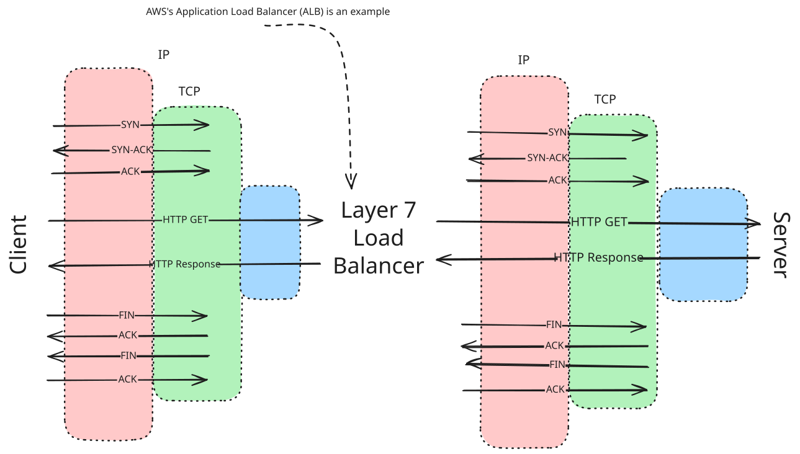
Simple HTTP Request with L7 Load Balancer
Layer 7 load balancers have some key characteristics, they ...
- Terminate incoming connections and create new ones to backend servers.
- Can route based on request content (URL, headers, cookies, etc.).
- More CPU-intensive due to packet inspection.
- Provide more flexibility and features.
- Better suited for HTTP-based traffic.
For example, an L7 load balancer could route all API requests to one set of servers while sending web page requests to another (providing similar functionality to an API Gateway), or it could ensure that all requests from a specific user go to the same server based on a cookie. The underlying TCP connection that's made to your server via an L7 load balancer is not all that relevant! It's just a way for the load balancer to forward L7 requests, like HTTP, to your server.
While L7 load balancers can help us to not have to worry about lower-level details like TCP connections, we aren't able to ignore the connection-level reality if we want persistent connections to consistent servers.
Where to Use It
Layer 7 load balancers are great for HTTP-based traffic which is going to cover all of the protocols we've discussed so far except for Websockets.
The choice between L4 and L7 load balancers often comes up in system design interviews when discussing real-time features. There are some L7 load balancers which explicitly support connection-oriented protocols like WebSockets, but generally speaking L4 load balancers are better for WebSocket connections, while L7 load balancers offer more flexibility for HTTP-based solutions like long polling.
Health Checks and Fault Tolerance
While load balancers play a key role in distributing load and traffic, they are also responsible for monitoring the health of backend servers. If a server loses power or crashes, the load balancer stops routing traffic to it until it recovers.
This automatic failover capability is what makes load balancers essential for high availability. They can detect and route around failures without user intervention.
To do this, load balancers use health checks. Health checks are a way for the load balancer to determine if a server is healthy. They can be configured to check the server at different intervals and with different protocols.
Health checks can be configured to check the server at different intervals and with different protocols. A common approach is to use a TCP health check, which is a simple and efficient way to check if a server is accepting new connections. A Layer 7 health check might make an HTTP request to the server and make sure the response is success (e.g. a 200 status code vs a 500 indicating internal failures or no response indicating a crash).
Load Balancing Algorithms
The other benefit of a dedicated load balancer is that we have more choices over the algorithm used to distribute traffic.
Several options are available with most load balancers:
- Round Robin: Requests are distributed sequentially across servers
- Random: Requests are distributed randomly across servers
- Least Connections: Requests go to the server with the fewest active connections
- Least Response Time: Requests go to the server with the fastest response time
- IP Hash: Client IP determines which server receives the request (useful for session persistence)
Usually, a round robin or random algorithm is appropriate, especially for stateless applications where we don't expect any particular server to be more popular than any other. When a new server is introduced to the load balancer (e.g. for scaling), these algorithms will naturally start distributing traffic to it without any special configuration.
For services that require a persistent connection (e.g. those serving SSE or WebSocket connections), using Least Connections is a good idea because it avoids a situation where a single server gradually accumulates all of of the active connections.
Real-World Implementations
In practice, you'll encounter dedicated load balancers in various forms:
- Hardware Load Balancers: Physical devices like F5 Networks BIG-IP
- Software Load Balancers: HAProxy, NGINX, Envoy
- Cloud Load Balancers: AWS ELB/ALB/NLB, Google Cloud Load Balancing, Azure Load Balancer
Enterprise hardware load balancers can scale to support 100's of millions of requests per second, whereas software load balancers are more limited. Scaling load balancers is almost never part of a SWE system design interview (except for some networking specializations), but if you find the load balancer throughput is large — mentioning hardware load balancers is a good way out.
Common Deep Dives and Challenges
Ok cool, so we've got protocols, we can balance load, handle persistent connections, and maintain high availability. What else do we need to know?
While some aspects of networking can be assumed by your interviewer, other aspects are ripe for deep dive questions and probing to check your knowledge. Beyond the core protocols and patterns, several practical networking considerations can make or break your system design.
Regionalization and Latency
For global services, you're typically going to have servers distributed across the world. A common pattern is to have multiple data centers in a single region (Amazon calls these "availability zones") so that e.g. a pipe breakage in one building doesn't take down your whole service, and then replicate this model across multiple cities spread across the world.
But while this global deployment is a great victory for humanity, it does introduce new networking challenges. The physical distance between clients and servers significantly impacts network latency. Speed of light limitations mean that a request from New York to London will always have higher latency than a request to a nearby server (<1ms vs >80ms).
Light travels through fiber optic cables at about 2/3 the speed of light in a vacuum, which is approximately 200,000 km/s. This means a round trip between New York and London (about 5,600 km) has a theoretical minimum latency of around 56ms just from the physics of signal propagation, before adding any processing time. This physical constraint is why geographic distribution is essential for low-latency applications.
What do we do about this?
In order to address this problem, we need to return to data locality. Across all of computing, we're going to have highest performance when the data is as close as possible to the computations we need to do.
For a regional application, we want to try to keep all of the data we need to satisfy a query (a) as close together, and (b) as close to the user as possible. If our user data is in Los Angeles, but our web servers are in New York, every database query will have tens of milliseconds of network-induced latency. And that's before we even consider the processing time of the results!
Some of this latency is unavoidable. If our users are simply far apart, there's nothing we can actually do to change that. But there are a couple of strategies we can use to optimize within the constraints of physics.
Content Delivery Networks (CDNs)
The most common strategy for reducing latency is to use a Content Delivery Network (CDN). CDNs are networks of servers that are strategically located around the world. CDNs frequently boast hundreds or even thousands of different cities where they have servers. These servers make up what is commonly referred to as an "edge location". If that edge server can answer a user's request, the user is going to get lightning fast response times — the data is just up the road!
This is only possible because of caching. If our data doesn't change a lot, or doesn't need to be updated frequently, we can cache it at the edge server and return it from there. This is especially effective for static content like images, videos, and other assets.
In interviews, you'll see CDNs used frequently when we have data that is very cacheable and needs to be queried from across the globe. Using a CDN as a cache for e.g. search results on Facebook allows us to both minimize latency and reduce the load on our backend servers.
Regional Partitioning
Another strategy common when we need to deal with regionalization is regional partitioning. If we have a lot of users in a single region, we can partition our data by region so that each region only has data relevant to it.
Let's take Uber as an example. With the Uber app we're ordering rides from drivers in a specific city. If we're in Miami, we'll never want to book a ride with a driver currently in New York. This is an important insight!
While on any given day we may have millions of riders and drivers, inside one particular city we may only have a few thousand. Our physical architecture and network topology can mirror this!
We can bundle together nearby cities into a single local region (e.g. "Northeast US", or "Southwest US"). Each region can have its own database hosted on distinct servers located in that geography (maybe we put our data centers in New York and Los Angeles). The servers handling requests can be co-located alongside the databases they need to query. Then when users want to book a ride, or look up their status, their queries can be answered by their regional services (fast), and those regional services can use a local database to process the query (very fast). Nice and optimal!
Handling Failures and Fault Modes
Beyond regionalization, another deep dive question that comes up frequently is how we handle failures in our system. Part of this is server failures: servers crash, solar flares can flip bits, power can be cut. But we may also deal with network failures! Cables get cut, routers fail, and packets get dropped. Robust system design requires planning for these failures.
The fallacy of "the network is reliable" is one of the most dangerous assumptions in distributed systems. Always design with the expectation that network calls will fail, be delayed, or return unexpected results.
Addressing these failures common to many deep-dives and there are several strategies we can use to address them.
Timeouts and Retries with Backoff
The most elementary hygiene for handling failures is to use timeouts and retries. If we expect a request to take a certain amount of time, we can set a timeout and if the request takes too long we can give up and try again.
Retrying requests is a great strategy for dealing with transient failures. If a server is temporarily slow, we can retry the request and it will likely succeed. Having idempotent APIs is key here because we can retry the same request multiple times without causing issues.
Backoff
Retries can be a double-edged sword, though. If we have a lot of retries, we may be retrying requests that are going to fail over and over again. This can actually make the problem worse!
This is why most retry strategies also include a backoff strategy. Instead of retrying immediately, we wait a short amount of time before retrying. If the request still fails, we wait a little longer. This gives the system time to recover and reduces the load on the system.
It's important there is some randomness to the backoff strategy (often called "jitter"). It doesn't help us to have all of our clients retry at the same time! The worst case would be having all our failing requests synchronize and retry at the same time over and over again like a jackhammer. No good.
In system design interviews, interviewers are often looking for the magic phrase "retry with exponential backoff". In more senior interviews, you may be asked to elaborate about adding jitter.
AWS has a great blog post on the timeouts, retries, and backoff if you want to learn more.
Idempotency
Retries are cool except when they have side effects. Imagine a payment system where we're trying to charge a user $10 for something. If we retry the same request multiple times, we're going to charge the user $20 (or $2,000) instead of $10! Ouch.
This is why we need to make sure our APIs are idempotent. Idempotent APIs are APIs that can be called multiple times and they produce the same result every time. HTTP GET requests are common examples of idempotent APIs. While the content returned by a GET request may change, the act of fetching the content does not change the state of the system.
But reading data is easy, how about writing data? For these cases, it's common for us to introduce an idempotency key to our API. The idempotency key is a unique identifier for a request that we can use to make sure the same request is idempotent.
For our payment example, if we know a user is only ever going to buy one item per day, we can set an idempotency to the user's ID and the current date. On the server-side, we can check to see if we've already processed (or are currently processing) a request with that idempotency key and process it only once. User-friendly APIs will wait for the request to complete then send the results to all requesters. Less friendly APIs will just return an error saying the request already exists. But both will keep you from double charging your user's credit cards.
Circuit Breakers
The last topic we see commonly in deep dives is how to handle cascading failures in a system. Senior candidates are frequently asked questions like “what happens when this service goes down”. Sometimes the answer is simple: “we fail and retry until it boots back up” — but occasionally that will introduce new problems for the system!
If your database has gone down cold and you need to boot it up one instance at a time, having a firehose of retries and angry users might pin down an instance from ever getting started (sometimes ominously referred to as a "thundering herd"). You can't get the first instance up, so you have no hope of getting the whole database back online. You’re stuck!
Experienced engineers who have spent time oncall will have a lot of war stories about cascading failures. It's a common problem that usually goes unnoticed until it bites you at 3am.
As such, it makes for a great interview question! Not only does it help you to find candidates who understand how to prevent some of the most pernicious issues, but it's also a decent screen for experience which many interviewers are looking for.
The key for your preparation is to familiarize yourself with scenarios where one failure might create new failures: a cascade of failures. Being able to identify these patterns and how to mitigate them is a great way to stand out in an interview.
Enter circuit breakers: a crucial pattern for robust system design that directly impacts network communication. Circuit breakers protect your system when network calls to dependencies fail repeatedly. Here's how they work:
- The circuit breaker monitors for failures when calling external services
- When failures exceed a threshold, the circuit "trips" to an open state
- While open, requests immediately fail without attempting the actual call
- After a timeout period, the circuit transitions to a "half-open" state
- A test request determines whether to close the circuit or keep it open
This pattern, inspired by electrical circuit breakers, prevents cascading failures across distributed systems and gives failing services time to recover.
Circuit breakers provide numerous advantages:
- Fail Fast: Quickly reject requests to failing services instead of waiting for timeouts
- Reduce Load: Prevent overwhelming already struggling services with more requests
- Self-Healing: Automatically test recovery without full traffic load
- Improved User Experience: Provide fast fallbacks instead of hanging UI
- System Stability: Prevent failures in one service from affecting the entire system
Where to Use It
Circuit breakers can be a great response when an interviewer is deep-diving on reliability, failure modes, or disaster recovery. Being able to mention circuit breakers and apply them in useful places is a great way to show off knowledge that otherwise is won at 3:00am battling a hardware failure when the system Just. Won’t. Come. Back. Up.
Some example sites to apply circuit breakers:
- External API calls to third-party services
- Database connections and queries
- Service-to-service communication in microservices
- Resource-intensive operations that might time out
- Any network call that could fail or become slow
Wrapping Up
Woo. That was a lot. Networking is the foundation that connects all components in a distributed system. While the field is vast, focusing on these key areas will prepare you for most system design interviews:
- Understand the basics: IP addressing, DNS, and the TCP/IP model
- Know your protocols: TCP vs. UDP, HTTP/HTTPS, WebSockets, and gRPC
- Master load balancing: Client-side load balancing and dedicated load balancers
- Plan for practical realities: Regionalization and patterns for handling failures
Remember that networking decisions impact every aspect of your system - from latency and throughput to reliability and security. By making informed choices about networking components and patterns, you'll design systems that are not just functional, but robust and scalable.
In your interviews, be prepared to justify your networking choices based on the specific requirements of the system you're designing. We've outlined a bunch of sensible defaults, but the reality for most problems is there's no single right answer and your interviewer wants to see how you think through tradeoffs.
Follow-Up Opportunities
Learning by reading or watching is sometimes not the best way for builders to integrate new knowledge. One of the easiest ways to learn about networking is to create some network traffic and watch it flow through the network yourself. Download Wireshark and try to capture some network traffic on your own machine. This will give you a good idea of the entire protocol stack in action!
After you've done that, try simulating some common networking failures. Mac's Network Link Conditioner (available through XCode) is a great tool that allows you to simulate what happens when there is latency in the network or packet loss. Try simulating a really nasty cell-phone connection and see how websites and apps respond. You'll often find some surprises (and a lot of bugs). Have fun!